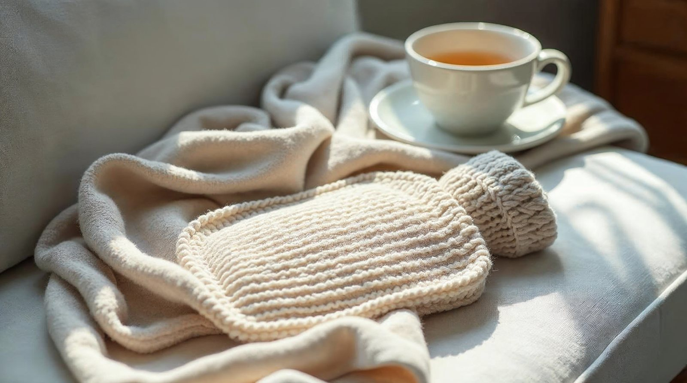
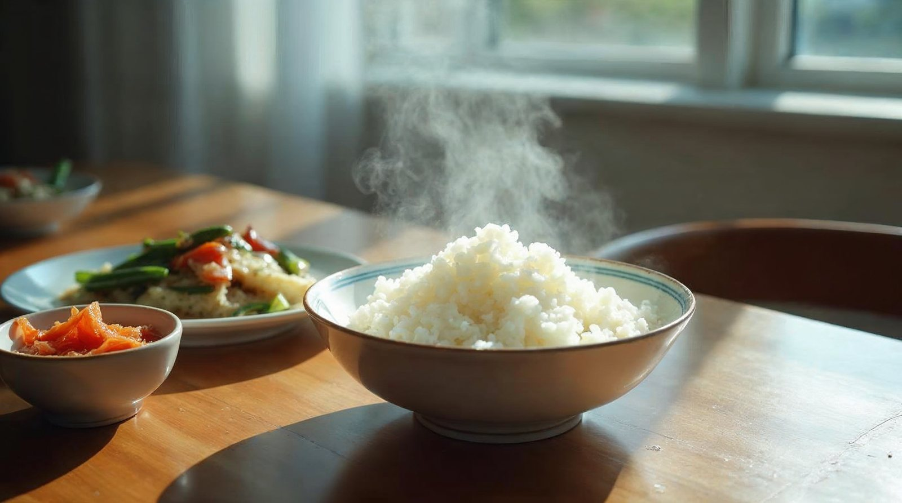

이종호 한의사 감수좋은꿈참사랑한의원 대표원장 (한의사 면허번호 19769)발행 2026-11-26 · 수정 2026-11-27
이 글의 차례
점심을 먹고 자리에 돌아와 앉았는데, 배꼽 둘레가 쿡쿡 쑤시기 시작해요. 손바닥으로 배를 꾹 눌러 보면 조금 덜한 것 같다가도, 잠시 뒤 다시 꼬이듯 아파 옵니다. 화장실에 다녀와도 시원하지 않고, 오후 내내 배에 신경이 쓰여 일이 손에 잡히지 않으시죠.
진료실에서 "배꼽 근처가 자꾸 아파요"라는 말을 꽤 자주 들어요. 어떤 분은 먹기만 하면 아프다고 하시고, 어떤 분은 아침 출근길에만, 또 어떤 분은 찬 바람을 쐬고 나면 그렇다고 하세요. 같은 배꼽 주변 통증이라도 그 사연은 사람마다 꽤 달라요.
배꼽 둘레는 작은창자가 모여 있는 자리이고, 대장이 그 바깥을 둘러 지나가요. 그래서 장이 지나치게 움직이거나 가스가 차거나 차가워지면 그 신호가 배꼽 주변으로 모여 느껴지기 쉬운 거예요. 원래 그래요. 대부분은 장의 리듬이 흔들린 데서 오거든요.
다만 '장의 리듬이 흔들려서 아픈 것'과 '따로 확인이 필요한 통증'은 다른 얘기예요. 이 글에서는 배꼽 주변 통증이 왜 생기는지, 비슷한 다른 통증과 어떻게 나눠 보는지, 일상에서 무엇을 해 볼 수 있는지, 그리고 한의원에서는 무엇을 여쭙고 살피는지를 차례로 말씀드릴게요.
왜 배꼽 주변이 쿡쿡 쑤실까요
배꼽 주변 통증의 가장 흔한 이유는 장의 움직임이 고르지 않을 때입니다. 장은 물결처럼 오므렸다 풀었다 하며 음식을 밀어 보내는데, 이 물결이 갑자기 세지거나 한 자리에서 꼬이듯 조이면 쿡쿡 쑤시는 통증으로 느껴집니다.
- 급하게 먹거나 과식한 뒤 장이 한꺼번에 일해야 할 때
- 찬 음식, 찬 음료, 찬 바람에 배가 차가워졌을 때
- 가스가 한 자리에 고여 장벽을 밀어낼 때
- 변비로 장 속이 꽉 차 있거나 설사로 장이 지나치게 움직일 때
- 긴장, 시험, 발표를 앞두고 장이 예민해질 때
- 장염을 앓고 난 뒤 장이 아직 회복 중일 때
이 가운데 긴장과 장의 관계는 생각보다 가깝습니다. 머리와 장은 신경으로 촘촘히 이어져 있어서, 마음이 쫓기면 장이 먼저 반응하는 분이 많습니다. 출근 전이나 중요한 일을 앞두고만 배꼽 주변이 아프다면 이 연결을 함께 살펴봅니다.
한의학에서는 배가 차고 기운이 막혀 아픈 경우, 먹은 것이 내려가지 못하고 정체된 경우, 긴장으로 기운이 뭉친 경우를 나눠 봅니다. 같은 배꼽 통증이라도 배를 따뜻하게 하면 편해지는지, 화장실을 다녀오면 풀리는지, 마음이 놓이면 가라앉는지에 따라 살피는 방향이 달라집니다.
아픈 자리가 옮겨 가는지 보세요
배꼽 주변 통증을 살필 때 가장 먼저 확인하는 것은 아픈 자리가 그대로인지, 다른 곳으로 옮겨 가는지입니다. 가스나 장의 움직임으로 생긴 통증은 배 여기저기를 옮겨 다니다가 방귀나 변을 보고 나면 풀리는 경우가 많습니다.
반대로 처음에는 배꼽 둘레가 막연히 아프다가 몇 시간에 걸쳐 오른쪽 아랫배로 자리를 옮기며 점점 또렷하고 심해진다면, 맹장염이라 부르는 충수염을 먼저 생각해야 합니다. 이런 흐름은 장의 리듬 문제와 다르게 보는 것이 중요합니다.
명치 쪽으로 올라가는 통증, 옆구리에서 아랫배로 뻗치는 통증, 아랫배 한가운데가 생리 주기에 맞춰 아픈 통증도 각각 따로 살필 자리입니다. 그래서 아플 때 손가락으로 가장 아픈 자리를 짚어 보고, 그 자리를 기억해 두시면 진료에 큰 도움이 됩니다.
아픈 자리를 설명하기 어렵다면 배를 네 칸으로 나눠 생각해 보세요. 배꼽을 가운데 두고 오른쪽 위, 왼쪽 위, 오른쪽 아래, 왼쪽 아래로 나누어 어느 칸이 아픈지 말씀해 주시면 됩니다. 휴대폰 메모에 간단히 그려 두셔도 좋습니다.
비슷한 다른 복통과는 어떻게 다를까요
과민성 장 증후군은 배가 아픈 것과 대변 변화가 함께 오는 것이 특징입니다. 배꼽 주변이나 아랫배가 아프다가 변을 보고 나면 한결 나아지고, 설사와 변비가 번갈아 오기도 합니다. 몇 달에 걸쳐 비슷한 양상이 되풀이된다면 이쪽을 함께 생각해 봅니다.
장염은 대개 갑자기 시작됩니다. 상한 음식을 먹었거나 주변에 장염을 앓는 사람이 있었고, 설사나 구토, 미열이 함께 오는 경우가 많습니다. 장염이 나은 뒤에도 몇 주 동안 배꼽 주변이 예민하게 아픈 분이 있는데, 이는 장이 아직 회복하는 과정일 수 있습니다.
변비로 인한 통증은 며칠 변을 못 본 뒤 배가 빵빵해지면서 묵직하게 아프고, 변을 보고 나면 풀리는 경우가 많습니다. 생리통은 아랫배 한가운데에서 시작해 허리로 퍼지는 경우가 많고, 생리 주기와 함께 움직입니다. 이렇게 함께 오는 변화를 보면 실마리가 잡힙니다.

언제 아픈지도 실마리가 됩니다
밥을 먹고 30분에서 한 시간 사이에 아프다면 장이 음식을 받아 움직이기 시작할 때 예민하게 반응하는 경우일 수 있습니다. 이때는 무엇을 먹었는지보다 얼마나 빨리, 얼마나 많이 먹었는지가 더 중요한 단서가 되기도 합니다.
아침에 일어나자마자 아프고 화장실에 가고 싶어진다면 밤새 쉬던 장이 깨어나며 크게 움직이는 흐름이 예민해진 것일 수 있습니다. 반대로 밤에 자다가 통증 때문에 깨는 일이 반복된다면, 장의 리듬 문제와는 다르게 보고 내과 검사를 먼저 권합니다.
찬 바람을 쐬거나 찬 바닥에 오래 앉아 있은 뒤 아프다면 배가 차가워진 것이 실마리입니다. 이런 분은 손으로 배를 만져 보면 배꼽 주변이 손보다 차갑게 느껴지기도 하고, 따뜻한 물주머니를 대면 통증이 누그러지는 경우가 많습니다.

식사 습관이 장의 리듬을 정합니다
장은 규칙적인 것을 좋아합니다. 끼니를 거르다가 한 번에 몰아 먹거나, 늦은 밤에 배불리 먹고 바로 눕는 날이 이어지면 장은 언제 일하고 언제 쉬어야 할지 헷갈려 합니다. 그 혼란이 배꼽 주변의 쿡쿡 쑤시는 통증으로 나타나기도 합니다.
진료실에서 식사를 여쭤 보면 "바빠서 10분 만에 먹어요"라는 대답을 자주 듣습니다. 급하게 먹으면 음식과 함께 공기도 많이 삼키게 되고, 덜 씹힌 음식이 장으로 넘어가 장이 더 애써야 합니다. 식사 속도만 늦춰도 통증이 줄었다고 말씀하시는 분이 적지 않습니다.
특정 음식이 늘 문제를 일으키는 분도 있습니다. 우유를 마시면 아프다거나, 밀가루나 기름진 음식 뒤에 꼭 탈이 난다는 분이라면 그 음식을 2주쯤 줄여 보고 통증이 달라지는지 지켜보세요. 다만 이것저것 한꺼번에 끊으면 오히려 식사가 부실해질 수 있으니 하나씩 확인하시는 편이 좋습니다.
마음이 쫓기면 배가 먼저 압니다
배꼽 주변이 아파서 오시는 분들 가운데 상당수는 요즘 마음이 바쁘다고 말씀하십니다. 일이 몰렸거나, 가족 일로 신경 쓸 것이 많거나, 잠을 설치는 날이 이어지는 시기에 배가 더 예민해지는 것은 흔한 일입니다.
이럴 때는 배만 따로 보기보다 하루 전체의 긴장을 함께 봅니다. 어깨와 목이 굳어 있는지, 잠이 얕은지, 숨이 짧게 쉬어지는지를 여쭙고, 쉬는 시간을 어디에 끼워 넣을 수 있을지 같이 찾아봅니다. 배가 편해지려면 마음에도 숨 쉴 틈이 필요합니다.
먼저 이렇게 여쭙니다
처음 오시면 저는 대략 이런 순서로 여쭙니다. 미리 생각해 오시면 이야기가 한결 수월해집니다.
- 통증은 언제부터 시작되었고, 하루 중 언제 주로 아픈가요?
- 쿡쿡 찌르는지, 꼬이듯 쥐어짜는지, 묵직한지 어떤 모양인가요?
- 아픈 자리가 그대로인가요, 다른 곳으로 옮겨 가나요?
- 식사, 대변, 방귀와 통증은 어떤 관계가 있나요?
- 설사, 변비, 구토, 열이 함께 있나요?
- 생리 주기나 긴장되는 일과 맞물려 아픈가요?
정확히 기억나지 않으셔도 괜찮습니다. "아플 때 배를 따뜻하게 하면 나아요", "화장실 다녀오면 풀려요" 같은 작은 말 한마디가 진찰의 방향을 정하는 데 큰 도움이 됩니다.
일상에서 먼저 해 볼 수 있는 것
배꼽 주변 통증은 장의 리듬을 부드럽게 해 주는 작은 습관에서 출발하는 경우가 많습니다. 한꺼번에 여러 가지를 바꾸기보다 하나씩 해 보시면서 어떤 것이 맞는지 살펴보세요.
- 한 숟가락을 여러 번 씹고, 식사 시간을 15분 이상으로 늘리기
- 배가 아플 때는 따뜻한 물주머니를 배꼽 위에 10~15분 대기
- 찬 음료와 얼음물은 아픈 기간에는 미지근한 물로 바꾸기
- 손바닥으로 배꼽을 중심으로 시계 방향으로 천천히 쓸어 주기
- 식후 바로 눕지 말고 10~15분 천천히 걷기
- 기름진 음식, 매운 음식, 탄산음료는 아픈 기간에는 잠시 줄이기
배를 쓸어 주실 때는 세게 누르기보다 손바닥 전체로 따뜻하게 감싸듯 둥글게 쓸어 주세요. 숨을 길게 내쉬면서 하면 배의 긴장이 함께 풀리는 것을 느끼실 수 있습니다. 누르면 더 아픈 자리가 있다면 그 자리는 피하시는 것이 좋습니다.
긴장으로 배가 아픈 분이라면 하루에 한두 번, 배에 손을 얹고 숨을 쉬는 시간을 만들어 보세요. 들이쉴 때 배가 부풀고 내쉴 때 꺼지는 것을 손으로 느끼며 천천히 숨을 쉬면, 쫓기던 몸이 조금씩 느슨해집니다.
배를 따뜻하게 감싸는 옷차림도 도움이 됩니다. 허리가 드러나는 짧은 옷보다 배와 허리를 덮는 옷을 입으시고, 찬 바닥에 오래 앉아 계시지 않도록 방석을 깔아 두세요. 작은 습관이지만 배가 차서 아픈 분에게는 차이가 꽤 큽니다.
한의원에서 함께 살필 수 있는 경우
- 검사에서는 큰 이상이 없다는데 배꼽 주변 통증이 자꾸 되풀이되는 경우
- 찬 음식이나 찬 바람에 배가 아프고, 따뜻하게 하면 편해지는 경우
- 긴장하거나 바쁜 날마다 배가 꼬이듯 아픈 경우
- 장염을 앓고 난 뒤 장이 예전처럼 편하지 않은 경우
- 통증과 함께 가스, 더부룩함, 대변 변화가 이어지는 경우
좋은꿈참사랑한의원에 오시면 먼저 아래 '먼저 확인이 필요한' 신호가 없는지부터 봅니다. 그다음 맥을 짚고 배를 직접 눌러 보며 단단함과 차가움, 아픈 자리를 확인하고, 식사와 대변, 잠, 긴장의 흐름을 여쭙습니다.
진찰한 내용을 바탕으로 생활에서 바꿔 볼 것 하나와 함께 침, 온열 관리, 한약 상담 가운데 지금 상태에 맞는 것을 정합니다. 한약을 상의할 때는 드시는 약을 모두 확인하고 신중하게 정하며, 임신 중이거나 임신 가능성이 있다면 먼저 알려 주시고 산부인과와도 상의해 주세요.
통증의 원인을 확인하는 내시경이나 혈액 검사가 필요하다고 판단되면 내과 진료를 함께 권합니다. 처방받아 드시는 약이 있다면 처방한 선생님과 상의 없이 멈추지 않으시도록 안내하고, 한의원 진료는 그와 나란히 갑니다.
이렇게 기록해 오시면 상담이 쉬워집니다
배꼽 주변 통증은 아플 때와 괜찮을 때의 차이가 실마리가 됩니다. 1~2주 정도만 간단히 적어 보세요.
- 아픈 시각과 얼마나 이어졌는지
- 가장 아픈 자리와 옮겨 갔는지 여부
- 아프기 전에 먹은 음식과 식사 속도
- 대변 횟수와 모양, 방귀나 가스 여부
- 찬 기운, 긴장, 생리 주기처럼 함께 있었던 일
- 무엇을 했을 때 나아졌는지
기록을 나란히 놓고 보면 "찬 음료를 마신 날", "점심을 급하게 먹은 날", "회의가 있던 날"처럼 반복되는 장면이 보이기 시작합니다. 그 장면 하나를 바꾸는 것이 다음 걸음의 출발점이 됩니다.
배가 편안한 하루를 위해
배꼽 주변 통증은 크게 걱정할 일이 아닌 경우가 많지만, 자주 되풀이되면 하루의 질을 꽤 떨어뜨려요. 식사 자리에서도, 출근길에서도 배에 신경이 쓰이면 마음까지 지치게 되거든요.
그래서 저는 통증이 사라지는 것만 목표로 삼지 않아요. 아플 때 무엇을 하면 편해지는지 스스로 알게 되는 것도 함께 목표로 둬요. 내 배가 어떤 날 예민해지는지 알면, 같은 통증이 와도 덜 당황하고 미리 대비할 수 있으니까요.
장의 리듬을 살피는 건 제가 맡을게요. 대신 하나만 부탁드려요. 배가 쿡쿡 쑤시기 시작하면 배 위에 손바닥이나 따뜻한 찜질팩을 얹어 잠시 데워 주세요. 딴 건 하시던 대로 편하게 하셔도 돼요.
그리고 통증이 어떻게 달라지는지 적어 오시면, 다음에는 그 기록을 펼쳐 놓고 함께 다음 걸음을 정해 봐요. 궁금한 건 그때 편하게 물어보세요.
이런 증상은 먼저 확인이 필요합니다
- 배꼽 주변 통증이 몇 시간에 걸쳐 오른쪽 아랫배로 옮겨 가며 점점 심해지고 열이 나는 경우
- 배가 딱딱하게 굳어 손도 못 댈 만큼 아프거나, 계속 토하면서 방귀와 변이 모두 막힌 경우
이런 신호가 있으면 한의원보다 가까운 병원이나 응급실을 먼저 찾으세요.
함께 읽으면 좋은 글
- 배가 자주 아프고 설사·변비가 반복되는 과민성 장 증후군은 어떻게 살피나요?
- 명치가 아프거나 꽉 막힌 듯 답답할 때는 무엇을 나눠 살피나요?
- 장염을 앓고 난 뒤 장이 예전 같지 않을 때, 회복기에는 무엇을 살피나요?
- 스트레스를 받으면 속이 아프고 설사나 변비가 반복될 때는 어떻게 살피나요?
- 찬 음식이나 찬 음료를 먹으면 배가 아플 때는 어떻게 하나요?

여쭙는 것
- 통증은 언제부터 시작되었고, 하루 중 언제 주로 아픈가요?
- 쿡쿡 찌르는지, 꼬이듯 쥐어짜는지, 묵직한지 어떤 모양인가요?
- 아픈 자리가 그대로인가요, 다른 곳으로 옮겨 가나요?
생활에서 해 볼 것
- 한 숟가락을 여러 번 씹고, 식사 시간을 15분 이상으로 늘리기
- 배가 아플 때는 따뜻한 물주머니를 배꼽 위에 10~15분 대기
- 찬 음료와 얼음물은 아픈 기간에는 미지근한 물로 바꾸기
한의원에서 함께 살필 것
- 검사에서는 큰 이상이 없다는데 배꼽 주변 통증이 자꾸 되풀이되는 경우
- 찬 음식이나 찬 바람에 배가 아프고, 따뜻하게 하면 편해지는 경우
- 긴장하거나 바쁜 날마다 배가 꼬이듯 아픈 경우
먼저 확인이 필요한 신호
- 배꼽 주변 통증이 몇 시간에 걸쳐 오른쪽 아랫배로 옮겨 가며 점점 심해지고 열이 나…
- 배가 딱딱하게 굳어 손도 못 댈 만큼 아프거나, 계속 토하면서 방귀와 변이 모두 막…
한눈에 보는 표
| 구분 | 핵심 |
|---|---|
| 여쭙는 것 | 통증은 언제부터 시작되었고, 하루 중 언제 주로 아픈가요? 쿡쿡 찌르는지, 꼬이듯 쥐어짜는지, 묵직한지 어떤 모양인가요? |
| 생활에서 해 볼 것 | 한 숟가락을 여러 번 씹고, 식사 시간을 15분 이상으로 늘리기 배가 아플 때는 따뜻한 물주머니를 배꼽 위에 10~15분 대기 |
| 한의원에서 함께 살필 것 | 검사에서는 큰 이상이 없다는데 배꼽 주변 통증이 자꾸 되풀이되는 경우 찬 음식이나 찬 바람에 배가 아프고, 따뜻하게 하면 편해지는 경우 |
| 먼저 확인이 필요한 신호 | 배꼽 주변 통증이 몇 시간에 걸쳐 오른쪽 아랫배로 옮겨 가며 점점 심해지고 열이 나는 경우 배가 딱딱하게 굳어 손도 못 댈 만큼 아프거나, 계속 토하면서 방귀와 변이 모두 막힌 경우 |
자주 묻는 질문
가스 때문에 아픈 것과 다른 통증은 어떻게 나눠 보나요?
가스로 생긴 통증은 자리가 옮겨 다니고 방귀나 변을 보고 나면 풀리는 경우가 많습니다. 한 자리에 머물며 점점 심해지는 통증은 따로 살펴야 해서, 아픈 자리와 시간을 적어 두시면 도움이 됩니다.
배가 아플 때 따뜻하게 하면 도움이 되나요?
찬 기운으로 장이 예민해져 아픈 경우에는 따뜻한 물주머니가 도움이 되는 분이 많습니다. 누르면 더 아픈 자리가 뚜렷하다면 그 자리는 데우거나 문지르지 말고 진찰 때 알려 주세요.
검사에서 이상이 없다는데 계속 아픈 건 왜 그런가요?
장의 움직임이 예민해지거나 긴장, 찬 기운, 식사 습관이 겹쳐 생기는 통증은 검사에서 뚜렷하게 보이지 않을 수 있습니다. 아픈 시간과 자리를 기록해 오시면 함께 흐름을 찾아봅니다.
배가 아플 때 침을 맞아도 되나요?
진찰을 통해 먼저 확인이 필요한 신호가 없는지 살핀 뒤, 지금 상태에 맞는지 판단해 정합니다. 드시는 약이 있다면 처음에 알려 주세요.
아이가 배꼽 주변이 아프다고 자주 하면 어떻게 하나요?
아이는 어디가 아파도 배꼽 주변을 가리키는 경우가 많습니다. 아픈 시간과 식사, 대변, 학교 일정을 함께 적어 두시고, 소아청소년과 진료와 함께 한의원에서도 생활 흐름을 살펴볼 수 있습니다.
좋은꿈참사랑한의원은 재진 때 지난번 이야기부터 이어서 여쭙니다. 진료시간과 예약은 오시는 길에서 확인하세요.
어디서 상담받을 수 있나요?
좋은꿈참사랑한의원은 서울 동작구 만양로2길 2 신성빌딩 3층·5층(서울 동작구 상도동, 7호선 상도역 3번 출구 근처)에 있습니다. 한의사 3명(이종호 대표원장, 조영기 수석진료원장, 정원영 진료원장)이 진료합니다. 진료시간은 평일 09:30~20:00(점심 13:00~14:00), 토·일·공휴일 09:30~15:00이며, 방문 전 전화로 확인을 권합니다. 예약은 네이버 예약, 카카오톡 상담, 전화 02-815-7510로 받습니다.
이 글은 일반적인 건강 정보이며 개인의 진단이나 치료를 대신하지 않습니다. 증상이 있거나 복용 중인 약이 있다면 진료를 통해 확인하세요. 치료 효과는 개인마다 다를 수 있습니다.
작성 기준: 일반적으로 알려져 있는 건강 정보를 참고해 정리했습니다(대표원장 감수). 증상 기록은 1~2주 동안 하루 1회, 비슷한 시간에 적어 오시면 지난 상태와 비교하기 쉽습니다.